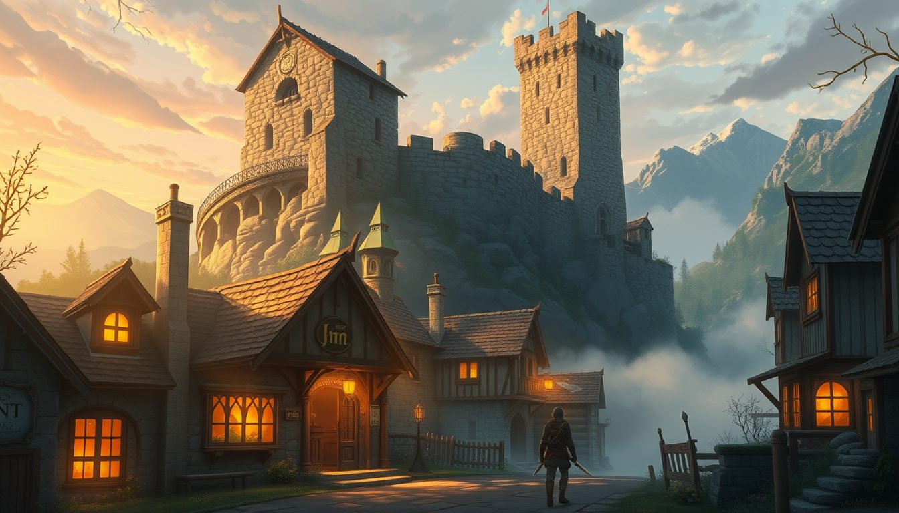
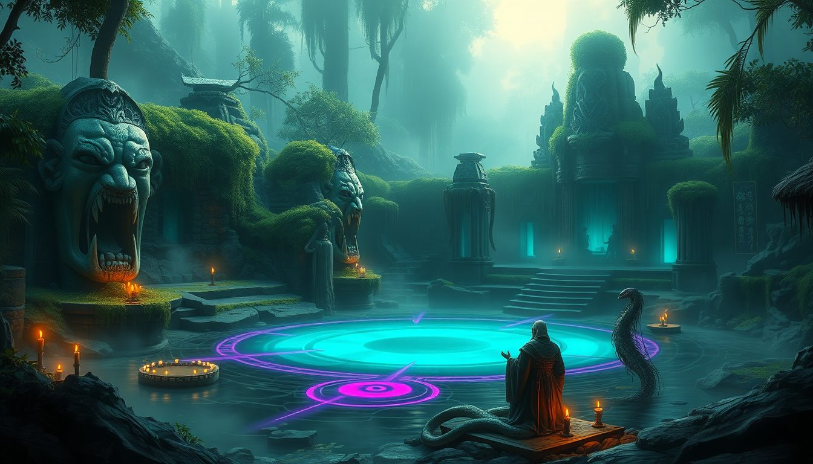
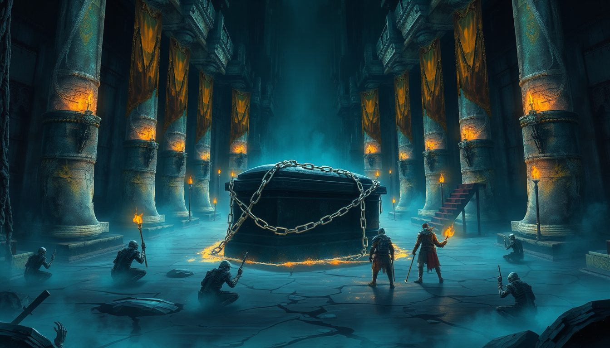
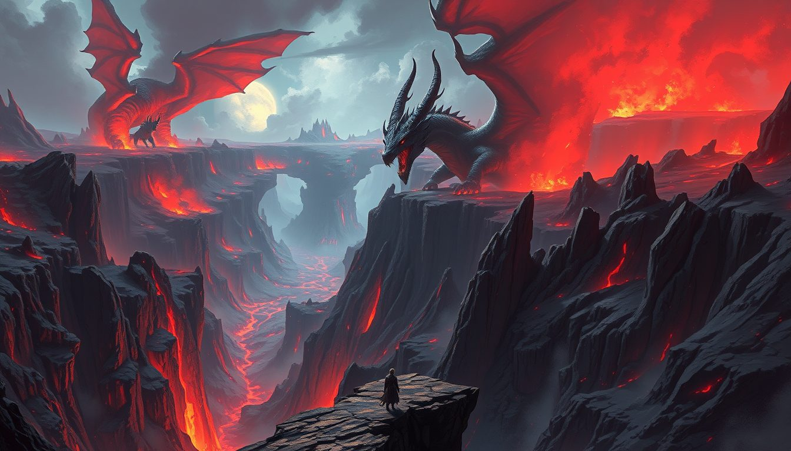
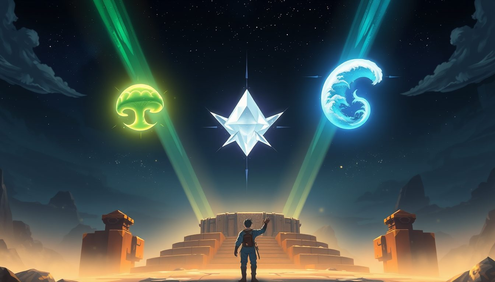
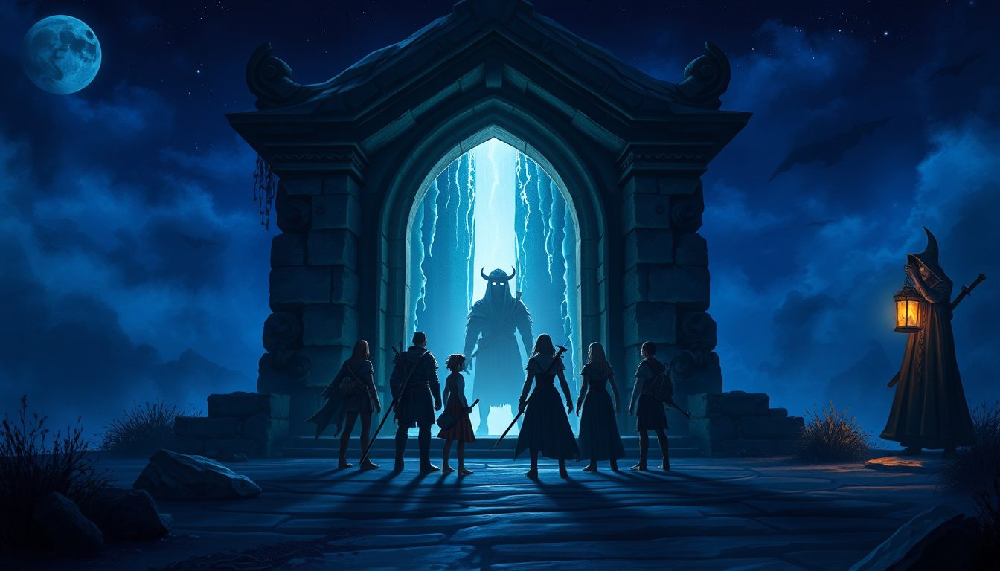
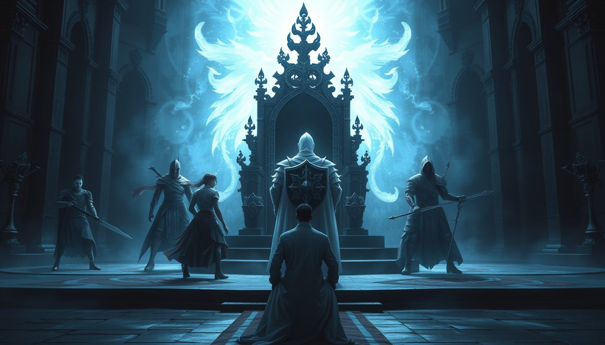
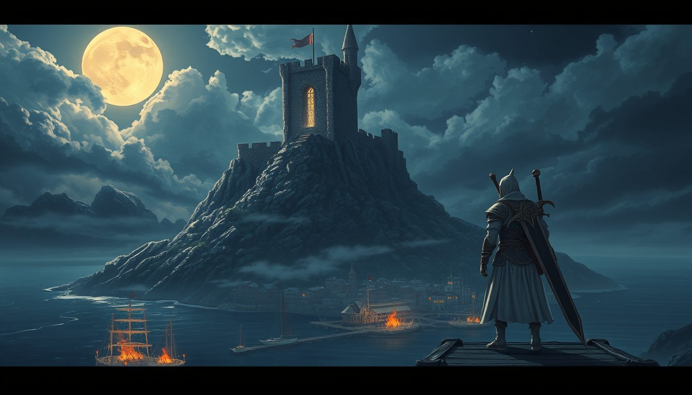
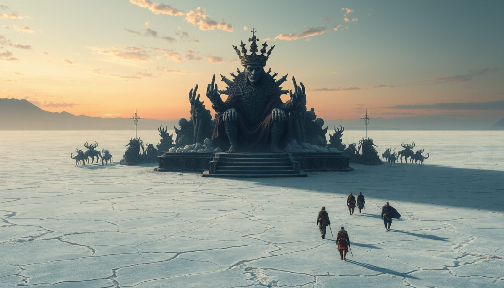

はじまりの伝承
むかし、空に一冊の書が浮かんでいた。人々はそれをグリモワールと呼んだ。
書に綴られたものは形を持つ。山も、町も、魔物も、そこに生きる人々も。冒険者が名を上げると、その名は頁の片隅に刻まれ、刻まれた者どうしは遠く離れていても呼び合える──人はそれを「絆」と呼ぶようになった。ロックヒルの導師エルナが教える「遠く離れた者を呼ぶ術」は、この頁の上の縁を手繰る業である。
書を守っていたのは、雲の上の都「空都エアシップ」と、そこに住まう女王だった。
ある夜、一頭の竜が書の筆を奪おうとした。自らの手で世界を書き換えるために。のちに簒奪竜と呼ばれるその竜との戦いで、空都は雲の彼方へ消え、書の頁は嵐のように地上へ散った。
竜は倒れなかった。封じられもしなかった。ただ、深く眠った。そして眠りの中から、地上の魔物たちに冠を投げ与えた。冠を戴いた魔物は「王」を名乗り、散った頁を喰らって力を増していく。
冠は七つ。六つは地に、七つ目は空に。
六つの冠がすべて落ちたとき、七つ目の主が目を覚ます。
──ロックヒルの誰もが忘れていたこの言い伝えを、あなたはこれから、自分の剣で確かめることになる。

序章
眠り猫亭の朝
Lv1〜10ロックヒルの町ロックヒル北部ロックヒル大坑道
山あいの町ロックヒル。宿屋「眠り猫亭」の藁の匂いで、あなたは目を覚ます。ポケットには少しのグリムと、どこで手に入れたのかも思い出せない一枚の紙切れ──それが、空から散った魔導書の頁の一枚だとは、まだ知らない。
東門の衛兵は言う。「外に出るなら魔物に気をつけろ」。北部の野でゴブリンを追い、ラビットを狩り、町の人の困りごとを片付けるうちに、あなたの名前は少しずつ町に知られていく。
やがて鉱夫がこぼす。「坑道の奥に主が居着いてしまった」。大坑道の闇の底で待つのは、大坑道の主ドルガン。そして最初の戦いを越えた夜、導師エルナがあなたに告げる。
「あなたの名が、頁に刻まれました。もう、ひとりではありません」
癒やし手の白導士セラが、最初の「絆」としてあなたの隣に立つ。

第一章
霧の祈祷
Lv8〜20ミストヴェイル密林ヴェイル村ロックヒル南部
南部の街道にはオークとワーグが出る。守る者を求めて、戦士リオが盾を掲げる。仲間が一人、また一人と頁に並んでいく。
霧に閉ざされたミストヴェイル密林。木漏れ日の泉のほとりには、誰が彫ったとも知れない巨大な石の顔が、じっと南を向いて眠っている。
その泉で、蛇身の司祭が祈っていた。蛇司祭シェザル。ナーガたちの祈りの言葉は、耳を澄ませばこう聞こえる──「眠れる冠の主よ、頁を喰らいて目を覚ましたまえ」。
祈祷を断った夜、ギルドの受付は杯を置いて呟いた。
「祈祷は止んだ。……だが、あれは前触れだったのかもしれん」

第二章
霊廟の銀鎖
Lv20〜36ヴェルダン高原地下霊廟上級ジョブの道
ヴェルダン高原の地下には、古い王国の霊廟が眠っている。石の柱、崩れた旗、そして中央に据えられた棺──棺を縛る銀の鎖は、ところどころが内側から千切れていた。
霊廟の主ヴェルガを鎮めても、墓守の顔は晴れない。
「静かになったよ……だが、もっと暗いものが目を覚ました」
高原の闇に、ひとつめの冠が光る。奈落王グァルドス。頁を喰らって膨れた奈落の魔王は、倒れる間際に笑った。「冠は我のものではない。我らは預かっているだけよ」。
Lv30。あなたの前に「二つ目の生き方」が開く。城の領主が騎士の盾を、墓守が闇の剣を、傭兵団長が影の技を、牙細工師が竜の骨の竪琴を──それぞれの師が、あなたを試す。

第三章
万魔の谷の竜王
Lv30〜46万魔の谷竜の谷冒険者ギルド最後の依頼
デーモンがうろつく万魔の谷の最奥には、竜が並ぶ谷がある。悪夢竜ヴァルガナ、戦慄竜、魂喰竜──そしてそのすべてを従える竜王。
「ギルド最後の依頼だ。……生きて戻れば、君の名は記録に残る」
黒い角の冠を戴いた竜王は、あなたの剣を受けながら、古い言葉で唸った。「小さき者よ、冠を砕いても無駄だ。我らが主は空にいる。簒奪竜は、筆を握る日を待っている」。
竜を殺した者の名は、確かに記録に残った。そして、ふたつめの冠が谷底に転がった。

第四章
三つの紋章
Lv35〜52モルガ胞子林サルタ塩湖跡エメル海岸
町の西、城の北。鏡の祠の番人影守りのセイラは、あなたをじっと見て言った。
「鏡の祠は、王を討った者にしか開かない」
三つの紋章を集めよ、と。胞子の森を支配する胞子母王モルガ。干上がった塩湖に君臨する塩冠王サルタ。そして難破船の残骸が打ち上がるエメル海岸の沖から現れる海嘯王ガルマーレ。
エメル海岸の砂浜には、南の海だけを見つめ続ける石像が一体、立っている。密林の石の顔も、同じ南を向いていた。……偶然だろうか。
(ちなみに、森で「森の主」を名乗っているキノコ王の冠は、よく見ると自分で編んだ茸の傘だった。)
「三つの紋章が揃った。鏡の祠へ行きなさい。影の冒険者たちが、お前たちを待っている」

第五章
鏡の向こうの影
Lv50〜鏡の祠影ロックヒル 1F〜B10称号【勇者】
鏡をくぐると、そこはもう一つのロックヒルだった。同じ石畳、同じ城──ただし、すべてが裏返しの。魔導書の裏の頁。
そこにいるのは魔物ではない。自分たちと同じようにジョブを持ち、互いを支え合う冒険者たち。影の冒険者。頁の途中で物語が途切れた者──勇者になれなかった者たちの影が、今も「勇者の座」を守っている。
石牢、地下水路、書庫、聖堂。「癒し手を先に倒せ」。鏡の間では、あなた自身の姿が剣を抜く。「己を知れ。鏡に映るのは、お前たち自身だ」。

B10 王の間 ─ 先代勇者一行
そして最下層、王の間。玉座の前に立つのは、白銀の盾を掲げた騎士──先代勇者レオンと、その五人の仲間。二十年前、空都へ続く階を登ろうとして、頁ごと墜ちた一行だ。
「まだ終わらない……！」
倒れた仲間が何度でも立ち上がる。勇者は倒れない。──あなたが、その座を継ぐまでは。
最後の一太刀のあと、レオンの影は穏やかに笑った。「続きを、書いてくれ」。あなたとすべての絆が放つ最強の連携「絆の総攻撃(ユナイト・ブレイブ)」は、この日、あなたのものになった。

第六章
最果ての岬と、湖底の王
Lv54〜60ヴェルミア岬鈍色の塩底剣聖の道
地図の最果て、ヴェルミア岬。港の漁師長は北東の丘を指さす。「あの城は捨てられて久しい。夜には灯りが見えるという者もいる」。
港の東の外れに、白と黒の鎧に大剣を背負った男が立っていた。剣聖シグルド。
「廃城の主ガルデリク。俺の師を斬った男だ。奴を討て。俺は手を出さん」
仇が土に還っても、シグルドは剣を置かなかった。「まだ一つ、確かめたいことがある」。──彼の師は、先代勇者の一行にいた戦士ディン。影ロックヒルの王の間で、あなたが剣を交えた、あの影だ。師の物語が、あなたの手で終わりを迎えたことを知った剣聖は、はじめて大剣をあなたのために抜く。

鈍色の塩底 ─ 湖底王ネルガル
乾いた湖の底に、王を名乗る者が座っている。六つめの冠の主、湖底王ネルガル。湖の記憶を一滴残らず飲み干した王は、崩れ落ちながら空を仰いだ。
「冠は……六つ、落ちた。聞こえるか、小さき者。空で、翼の音がする」
湖が静かになった夜、ロックヒルの空で、魔導書が一瞬だけ強く光るのを、何人もの町人が見たという。